Serviços em iPad
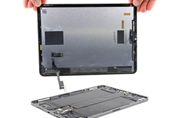
Substituição de Tela
Substituímos a tela completa de todos os modelos de iPad.
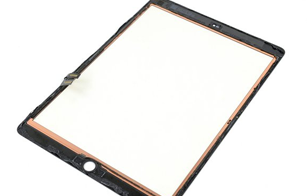
Substituição do Vidro Frontal
Substituímos apenas o vidro frontal mantendo o display original intacto.
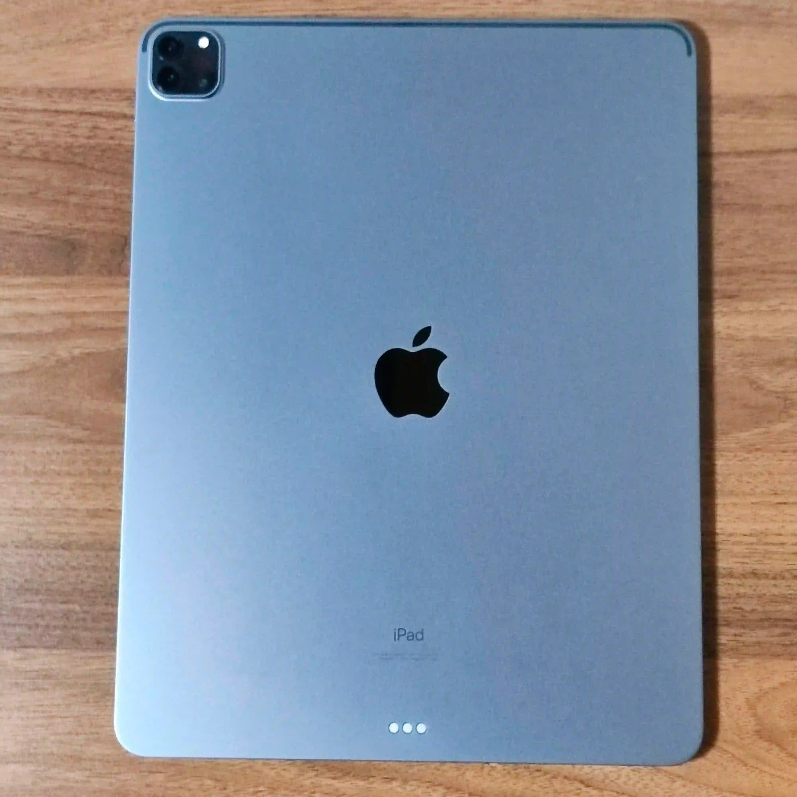
Substituição do Vidro Traseiro
Substituímos o vidro traseiro do seu iPad.
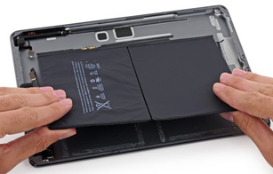
Substituição de Bateria
Substituímos a bateria do seu iPad para restaurar a autonomia original.
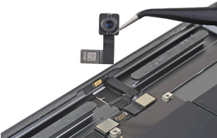
Reparo da Câmera Traseira
Câmera traseira com defeito? Fazemos a substituição completa.
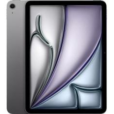
Reparo da Câmera Frontal
Câmera frontal com defeito? Realizamos o reparo completo.
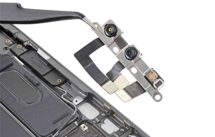
Reparo de Face ID / Touch ID
Reparamos o Face ID ou Touch ID do seu iPad.
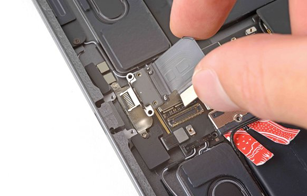
Reparo do Conector de Carga
iPad não carrega? Substituímos o conector de carga completo.
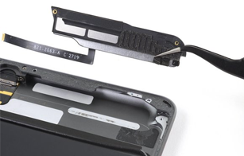
Reparo de Alto-falantes
Som distorcido ou sem áudio? Reparamos os alto-falantes do seu iPad.
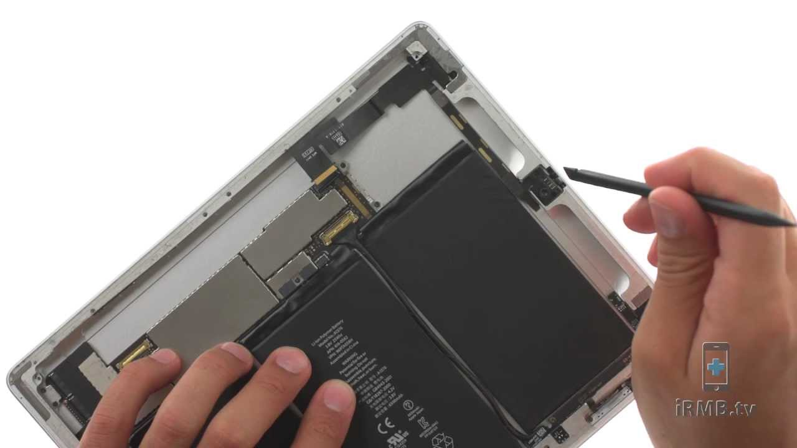
Reparo de Microfone
Microfone não funciona? Fazemos o reparo completo do seu iPad.
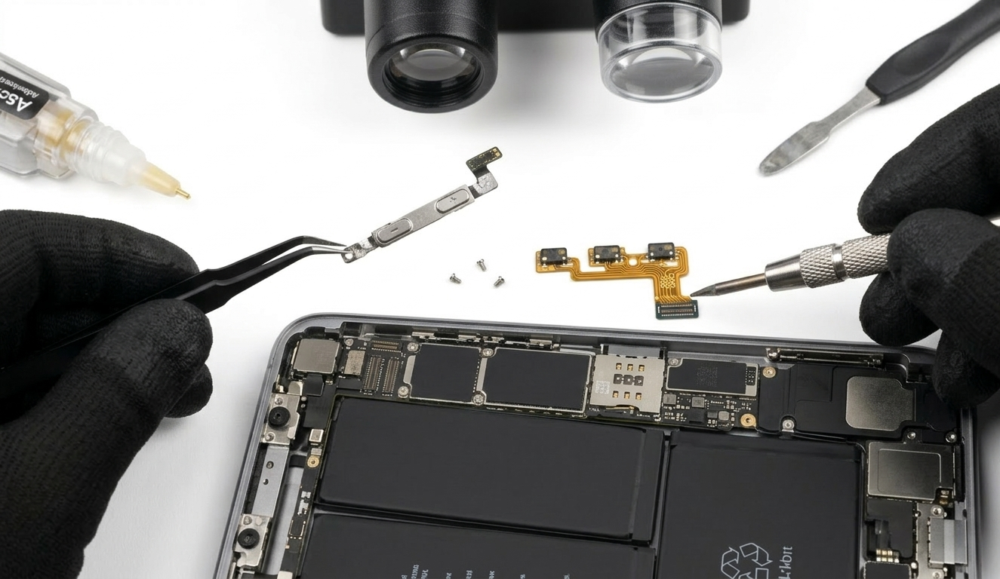
Reparo de Botões (Power / Volume)
Botões travados ou sem resposta? Realizamos o reparo completo.
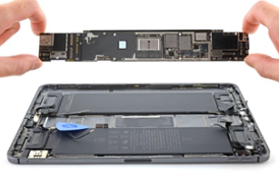
Diagnóstico Completo do Sistema
Diagnóstico completo para identificar qualquer problema no seu iPad.
Atualização ou Reinstalação do iPadOS
Reinstalação ou atualização do iPadOS para resolver problemas de software.
Backup e Recuperação de Dados
Backup completo e recuperação de dados do seu iPad.
Seu iPad precisa de reparo?
Diagnóstico gratuito, atendimento personalizado e garantia de 1 ano.
Agendar atendimento